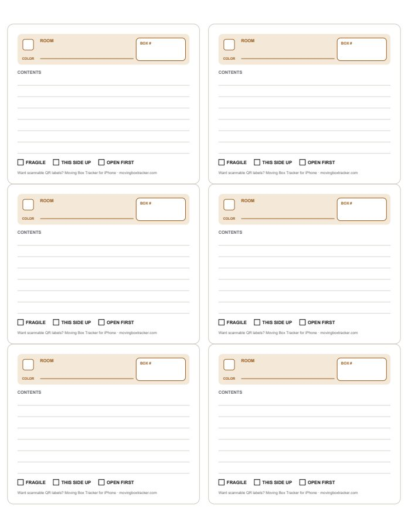
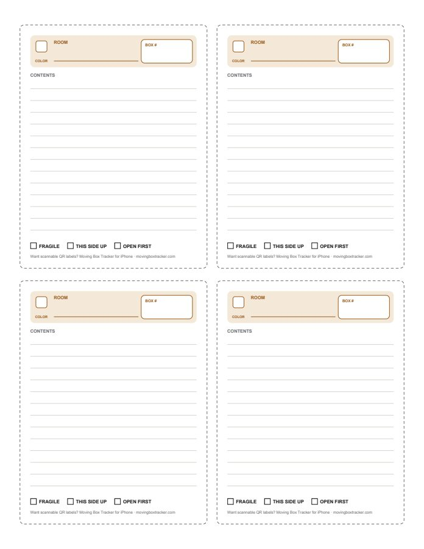

Labels or paper
Sticker sheets like Avery 5164 or 5168, or plain paper and clear packing tape over the whole label.
Moving guide
Good labels answer two questions: which room does this box go to, and what's inside? Here's a simple system that works for movers, helpers, and you on the first night in the new place.
Give every box a number, write the room it's going to in the new home, list what you'll go looking for, and label two sides plus the top. Keep a list of box numbers and contents with you.
A number is the quickest way to talk about a box (“bring me 23”) and the link between the box and your inventory list. Number boxes in the order you pack them. Don't restart the count for each room.
Label boxes by their room in the new home, not the old one. Movers unload by destination. If the new place has two bedrooms, call them something clear like “Bedroom: Sam” and “Bedroom: guest”.
Skip “misc” and “stuff”. Write the things you'll need before the box is unpacked: phone chargers, the coffee maker, medicine, passports, the TV remote. Three to six specific things beats a vague category.
The top disappears when boxes are stacked. Put one label on a long side and one on the top, so you can read it however it's stacked.
Pick one color per room: blue for the kitchen, green for the garage. Mark each label with that color and put a matching sheet of paper on the door of each room in the new home. Movers can match colors without reading.
Use Fragile and This Side Up only when they're true. If every box says fragile, movers stop noticing.
Pack sheets, towels, toilet paper, basic tools, chargers, a kettle, and snacks in one box, and mark it Open First. Better still, move it in your own car.
Put screws and bolts in a zip bag, write the furniture's name on it, and tape it to that piece of furniture.
Write each box number, its room, and its contents on one list. Count boxes onto the truck and off again. Our free moving inventory list has a one-page box checklist for this.
What you need
Sticker sheets like Avery 5164 or 5168, or plain paper and clear packing tape over the whole label.
Black for writing, plus one colored marker or roll of colored tape for each room.
A printed checklist, a spreadsheet, or an app. Somewhere box numbers are written down outside the boxes.
Free printables
Room, box number, contents lines, and Fragile / This Side Up / Open First checkboxes. Fillable PDFs, free with no sign-up.

4″ × 3⅓″ stickers. Also fits Avery 8164.
Download PDF →
No sticker sheets needed. Four labels with cut lines on US Letter paper.
Download PDF →Large Avery 5168 labels, A4 paper, and printing tips for lining up sticker sheets.
Labels that know what's inside
Moving Box Tracker for iPhone gives every box a QR label. It prints on the same Avery 5164 and 5168 sheets, or plain paper. Scan a label to see what's inside, or search “charger” to find which box it's in. Free for unlimited boxes, with no subscription.

Good to know
The room it's going to in the new home. Movers unload by destination, so that's the room name they need to read.
On at least one side and the top. Stacked boxes hide their tops, so a side label can still be read when the box is in a stack.
A thick marker works. Printed labels are easier to read, have space for a contents list, and can be removed if you reuse the box.
Number every box and keep a list of what's in each number. A QR code label from an app like Moving Box Tracker links each box to its contents list, so you can search for an item and see which box it's in.
More free moving help